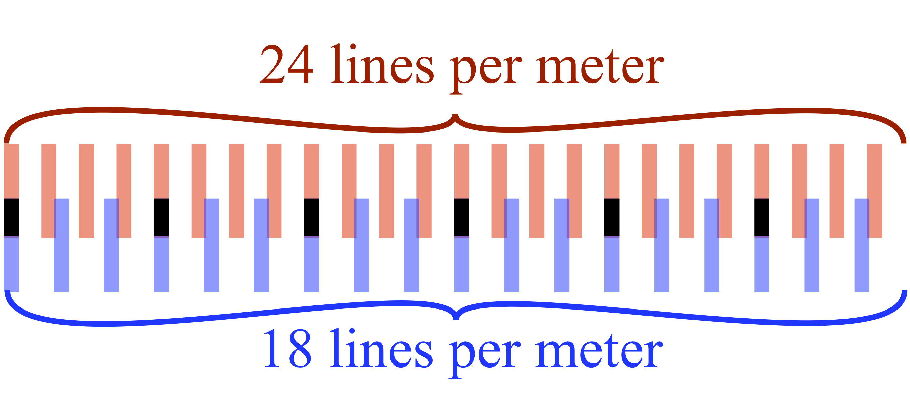
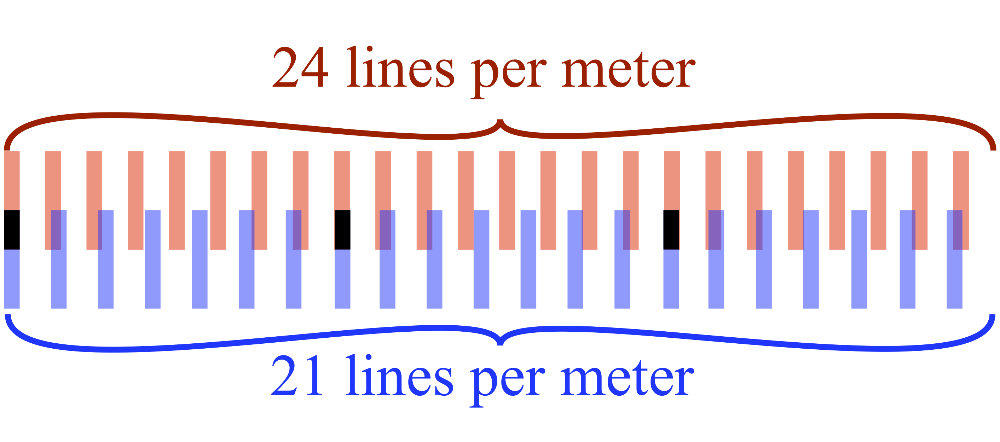

Superposition and Beats
5
Superposition
When two waves or pulses exist in the same location in space at the same time, their displacements simply add.
$$y(x,t)=y_1(x,t)+y_2(x,t)+\dots$$
This is called interference, although this is a misnomer as the waves do not actually interfere with each other at all: they pass right through each other.
Where the two displacements have the same sign, the net displacement is larger than either one individually, and we call that constructive interference. Where they have opposite signs, that is destructive interference.
Constructive and destructive interference
Something to do with superposition. Maybe a triangle+triangle problem I use in tests?
Beats


Whenever you place two repeated phenomena together with slightly
different frequencies, you get beats. This is a general
phenomenon. For example, in the first image to the right, there are 24
red lines per meter (kmin=24/m), and 18 lines
occupying the same length. We see that at some locations, the lines
move "out of phase" of each other, and do not overlap, while at other
locations (marked by black) the lines overlap again. These marks of
overlap are called beats. If the lines were representing crests of
waves, then the beats would be places of constructive interference.
In the second figure, when the wavenumbers are closer together,
there are fewer beats per meter. In fact, you should convince
yourself that the number of beats per meter is equal to
$$k_{beats}=\left|k_{red}-k_{blue}\right|$$
Mathematics of beats
Beats arise from the trigonometric relationship
$$\cos \alpha+\cos\beta = 2\cos {\alpha+\beta\over 2}\cos {\alpha-\beta\over 2}$$
Product of two cosines, adjustable wavenumbers
How? According to this relationship, whenever you add two cosines together, it is equivalent to a product of two cosines. When the product of two sinusoidal graphs like \(\cos k_cx\cos k_ex\), has one wavenumber is much different than the other (let's say \(k_c\gg k_e\)), then you end up with a slow-changing envelope (wavenumber \(k_e\)) and the faster carrier (\(k_c\)), which looks like the picture to the right. Thus, if you add two cosines together whose wavenumbers are very close together \(k_1-k_2\ll k_1+k_2\), you get a carrier wave with wavenumber \(k_c=\frac12(k_1+k_2)\) and an envelope of \(k_e=\frac12(k_1-k_2)\).
Here is a picture of the sum of two sine waves. What are their frequencies?